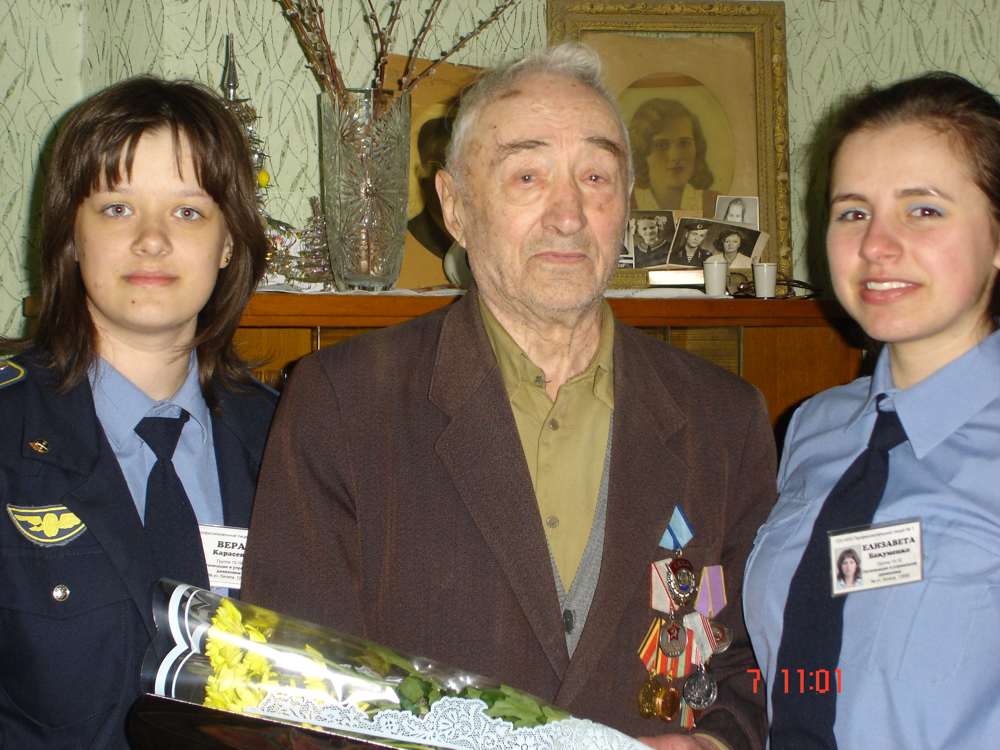

Наши студенты ежегодно поздравляют ветеранов

Связь поколений. А.П. Рогозина, машинист паровоза в годы ВОВ в музее и студент Евгений Коленченко, ныне ветеран СВО

Ветераны в музее в день празднования 95-летия Ивановского железнодорожного колледжа 19.11.2014
г.

Ветераны в музее в честь юбилея прихода первого тепловоза на Ивановскую железную дорогу. 1971 год

Ветераны железной дороги на открытии новой экспозиции музея

Ветераны и студенты в экспозиции музея

Связь поколений. Ветеран железнодорожник З.И Зайцева, вдова участника ВОВ со студентами в музее

Члены Совета музея А.А. Носкова и П.И. Коськин